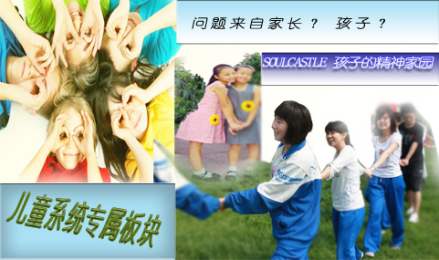
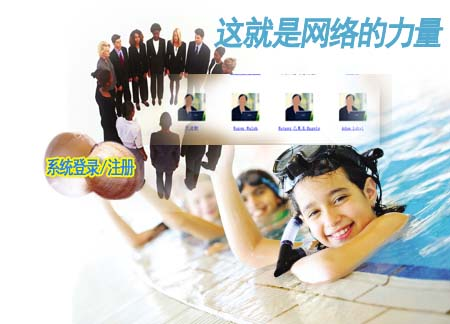
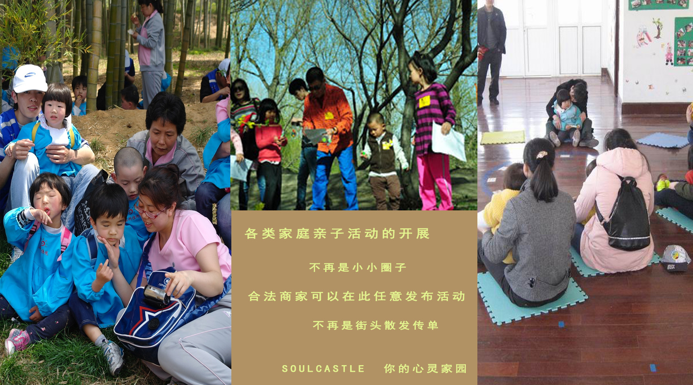
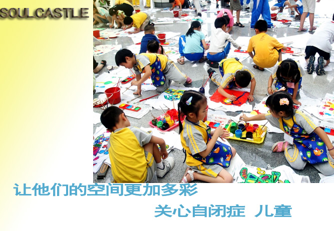

SOULCASTLE--心灵之家自助心理咨询平台
-
SOULCASTLE成人系统简介
-

SOULCASTLE儿童系统简介
-
SOULCASTLE私人订制简介
-
心理咨询师介绍
-

匹配咨询师与求助者
-

有特色的开展各类家庭活动
-

自闭症儿童的福音堂
-
你可以在世界各角落找到我们
SOULCASTLE各系统及咨询资料一览
SOULCASTLE 阅览室
色彩对儿童的影响 儿童系统新闻 李中莹爱上双人舞 成人系统新闻 2015-7-9 英 看看西方小孩的培养观 儿童系统新闻 2015-9-12 故事探秘 记忆测试 儿童系统新闻 2015-8-7 10岁之前教会孩子怎么做人 儿童系统新闻 2015-5-23 好妈妈胜过好老师 儿童系统新闻 2015-3-5 兵临城下 成人系统新闻 2015-2-27 本期活动之星
专家简介 吴琪 擅长咨询领域：国家二级心理咨询师，主任心理咨询师，具有较强的感知能力和分析能力。咨询风格：接纳、亲切、包容，以人为本，引导来访者自我探索，协助来访者疏离情绪，增强自我。擅长的领域为：恋爱婚姻情感、人际沟通、自我成长、情绪管理、职场解压、职业生涯规划、抑郁症、焦虑症、强迫症、恐惧症、性心理问题等。 年龄 34